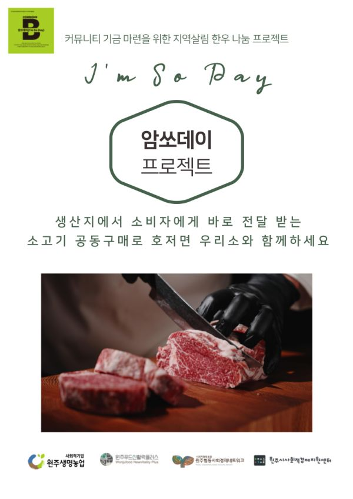
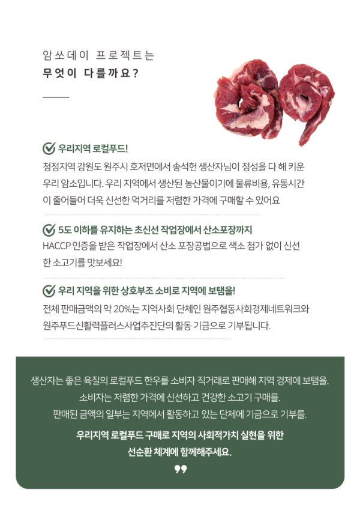
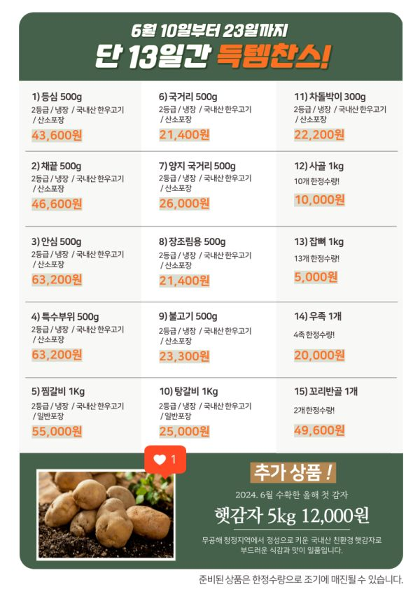
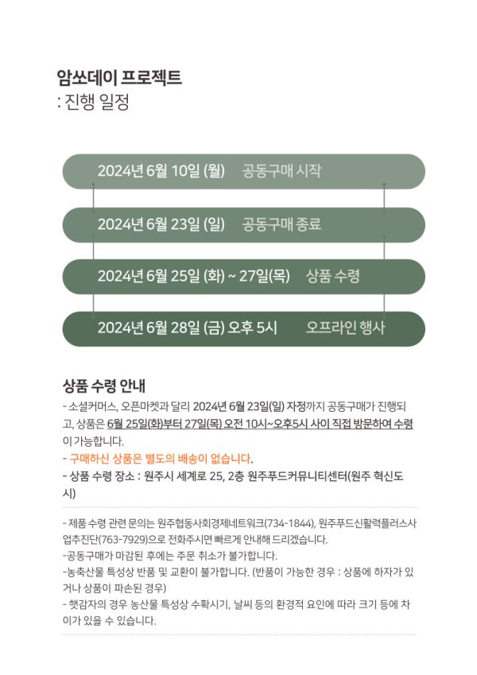
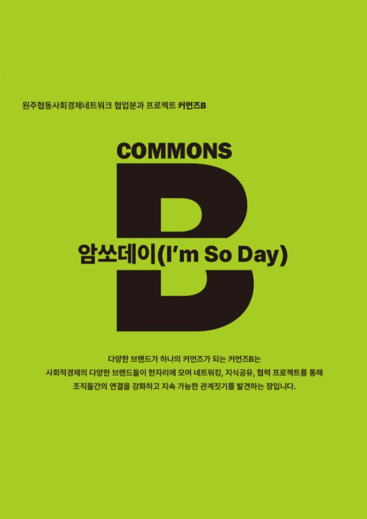

커뮤니티 기금 마련을 위한 지역살림 한우 나눔 프로젝트
<<암쏘데이 프로젝트>>
요즘 네트워크에서는 우리 조합원인 원주생명농업, 유관기관인 원주푸드신활력플러스사업추진단과 함께 로컬푸드 한우 공동구매를 기획해 추진하고 있습니다.
이번에 판매하는 소는 생명농업의 송석헌 생산자가 키워낸 암소 한우인데요, 생산지에서는 로컬푸드의 소비를 활성화하고 판로를 개척하는 의미가 있습니다.
네트워크에서는 전체 판매금액의 10프로를 네트워크 협업분과의 기금으로 적립합니다.
이번 기회에 로컬푸드 한우도 구매하시고, 공동구매 활동을 통해 네트워크 전체의 기금 적립에도 함께해주세요.
신활력을 통해 일반 시민에게도 원주생명농업과 로컬푸드 한우를 알리고, 네트워크에서는 이번 행사를 시작으로 조합원 간의 상호거래 활성화를 기대하고 있습니다!
-
*암쏘데이 공동구매 일정 : 24.06.10(월) ~ 06.23(일) 자정까지
*상품수령일정 : 24.06.25(화) ~ 27(목)
*상품 수령 장소 : 원주푸드커뮤니티센터(원주시 세계로 25, 2층)
덧붙여, 협업분과에서는 매월 4째주 금요일에 조합원을 소개하는 <커먼즈B>행사를 개최하고 있는데요.
6월 커먼즈B는 "원주생명농업"입니다.
6월 28일(금) 오후5시, 호저 생기를담아 레스토랑에서 암쏘데이 정육식당을 엽니다.
생명농업을 소개하고 조합원의 네트워킹 자리로 마련하였으니, 주변 지인분들과 참석하시어 함께 즐거운 시간 보내시길 바랍니다????
????공동구매 온라인 페이지 https://smartstore.naver.com/wjsn